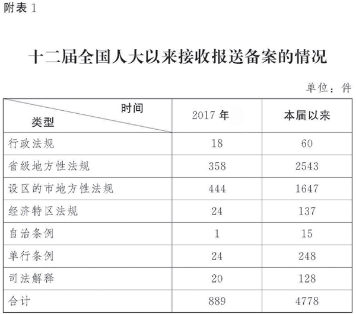
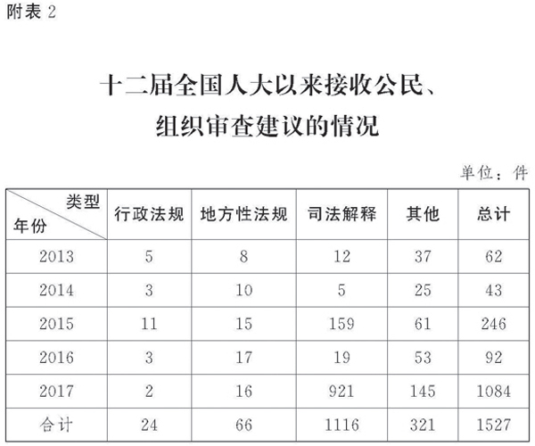

全国人大常委会法制工作委员会主任 沈春耀
全国人民代表大会常务委员会：
现将十二届全国人大以来暨2017年开展备案审查工作的情况报告如下，请予审议。
一、开展备案审查工作的依据和意义
对行政法规、地方性法规、司法解释开展备案审查，是宪法法律赋予全国人大常委会的一项重要职权，是全国人大常委会履行宪法法律监督职责的一项重要工作。宪法第六十二条、第六十七条规定，全国人大及其常委会行使监督宪法实施的职权，全国人大常委会有权撤销同宪法法律相抵触的行政法规、地方性法规。宪法第一百条规定，地方性法规报全国人大常委会备案。立法法第五章“适用与备案审查”、监督法第五章“规范性文件的备案审查”对备案审查制度作出具体规定，并明确将行政法规、地方性法规、司法解释纳入全国人大常委会备案审查范围。
根据宪法法律、行政法规、地方性法规以及党内法规和军事法规有关规定，目前我国已经形成由党委、人大、政府、军队各系统分工负责、相互衔接的规范性文件备案审查制度体系。基本框架是：全国人大常委会对行政法规、地方性法规、司法解释进行备案审查；国务院对地方性法规、部门规章、地方政府规章进行备案审查；地方人大常委会对本级及下级地方政府规章以及下一级地方人大及其常委会的决议、决定和本级地方政府的决定、命令进行备案审查；党中央和地方党委对党内法规和党内规范性文件进行备案审查；中央军事委员会对军事规章和军事规范性文件进行备案审查。
坚持依法治国首先要坚持依宪治国。全面贯彻实施宪法，宪法监督是重要保障。对规范性文件实行备案审查，是维护宪法法律尊严、保障宪法法律实施、保证国家法制统一的重要制度安排。加强备案审查工作是完善宪法监督制度的重要着力点。党的十八大以来，以习近平同志为核心的党中央高度重视宪法实施和监督，强调加强备案审查工作。2012年12月，习近平总书记在首都各界纪念现行宪法公布施行30周年大会上的讲话指出，全国人大及其常委会和国家有关监督机关要担负起宪法和法律监督职责，加强对宪法和法律实施情况的监督检查，健全监督机制和程序，坚决纠正违宪违法行为。2013年党的十八届三中全会提出，健全法规、规章、规范性文件备案审查制度。2014年党的十八届四中全会提出，加强备案审查制度和能力建设，把所有规范性文件纳入备案审查范围，依法撤销和纠正违宪违法的规范性文件，禁止地方制发带有立法性质的文件。2015年中央办公厅出台工作指导性文件提出，建立党委、人大、政府和军队系统之间的规范性文件备案审查衔接联动机制，实现有件必备、有备必审、有错必纠。
全国人大常委会高度重视备案审查工作。2004年5月，全国人大常委会在法制工作委员会内设立法规备案审查室，专门承担对行政法规、地方性法规、司法解释的具体审查研究工作，为全国人大常委会履行备案审查职责提供服务保障。十二届全国人大以来，全国人大常委会将备案审查工作列入每年的工作要点和立法、监督工作计划，全国人大常委会领导多次就备案审查作出重要阐述。张德江委员长明确指出备案审查制度具有两重基本功能，一是保证中央令行禁止，二是保证宪法法律实施，同时对提高地方立法质量也具有积极作用。李建国副委员长、王晨副委员长兼秘书长也就加强和改进备案审查工作提出明确要求。
五年来，国务院、最高人民法院、最高人民检察院，以及有立法权的地方人大及其常委会，积极适应全面依法治国新要求，依照法定权限和程序开展行政法规、地方性法规、司法解释制定和报送备案工作，自觉坚持与宪法法律保持一致，主动接受全国人大常委会监督，为贯彻落实党中央决策部署，有效实施宪法法律，维护中国特色社会主义法律体系科学和谐统一，发挥了重要作用。
二、开展备案审查工作的情况
十二届全国人大以来，在全国人大常委会领导下，法制工作委员会与全国人大专门委员会、常委会办公厅和有关工作机构密切配合，坚持以习近平新时代中国特色社会主义思想为指导，认真贯彻落实以习近平同志为核心的党中央的决策部署，坚持党的领导、人民当家作主、依法治国有机统一，坚决维护宪法法律权威，依据宪法法律和有关规定，按照全国人大常委会工作部署，积极开展备案审查工作，取得明显成效。
（一）备案工作情况
根据立法法第九十八条、监督法第三十一条的规定，行政法规、地方性法规、自治条例和单行条例、经济特区法规、司法解释，应当在公布后三十日内按照规定程序报全国人大常委会备案。备案是审查的前提。制定机关依法、及时将规范性文件按要求报送备案，直接关系后续审查工作的有效开展，也是制定机关自觉接受监督的重要体现。根据全国人大常委会委员长会议通过的《行政法规、地方性法规、自治条例和单行条例、经济特区法规备案审查工作程序》和《司法解释备案审查工作程序》，常委会办公厅具体承担接收备案工作。
十二届全国人大以来，截至2017年12月上旬，常委会办公厅共接收报送备案的规范性文件4778件，其中行政法规60件，省级地方性法规2543件，设区的市地方性法规1647件，自治条例15件，单行条例248件，经济特区法规137件，司法解释128件。2017年，常委会办公厅共接收报送备案的规范性文件889件，其中行政法规18件，省级地方性法规358件，设区的市地方性法规444件，自治条例1件，单行条例24件，经济特区法规24件，司法解释20件。
（二）审查工作情况
根据立法法第九十九条、监督法第三十二条的规定，国务院、中央军事委员会、最高人民法院、最高人民检察院和各省、自治区、直辖市的人大常委会认为行政法规、地方性法规、自治条例和单行条例、司法解释同宪法或者法律相抵触的，可以向全国人大常委会书面提出进行审查的要求，由常委会工作机构送有关专门委员会进行审查、提出意见；有关国家机关和社会团体、企业事业组织以及公民认为行政法规、地方性法规、自治条例和单行条例、司法解释同宪法或者法律相抵触的，可以向全国人大常委会书面提出审查建议，由常委会工作机构进行研究，必要时，送有关的专门委员会进行审查、提出意见；有关的专门委员会和常委会工作机构可以对报送备案的规范性文件进行主动审查。
备案审查工作实践中，法制工作委员会主要采取依申请进行的审查、依职权进行的审查、有重点的专项审查等方式开展审查研究工作。
1．依申请进行的审查情况。依申请进行的审查，是指根据有关国家机关和社会团体、企业事业组织以及公民依法书面提出的审查要求或者审查建议，对行政法规、地方性法规、司法解释进行的审查。十二届全国人大以来，法制工作委员会共收到公民、组织提出的各类审查建议1527件，其中2013年62件，2014年43件，2015年246件，2016年92件，2017年1084件。审查建议中属于全国人大常委会备案审查范围，即建议对行政法规、地方性法规、司法解释进行审查的有1206件，占79.0%；不属于全国人大常委会备案审查范围的有321件，占21.0%。属于全国人大常委会备案审查范围的1206件审查建议中，建议对行政法规进行审查的24件，占2.0%；建议对地方性法规进行审查的66件，占5.5%；建议对司法解释进行审查的1116件，占92.5%。没有收到过有关国家机关提出的审查要求。
法制工作委员会对收到的审查建议逐一进行认真研究，对审查中发现存在与法律相抵触或者不适当问题的，积极稳妥作出处理。例如，根据2016年浙江省1位公民提出的审查建议，对有关地方性法规在法律规定之外增设“扣留非机动车并托运回原籍”的行政强制的问题进行审查研究，经与制定机关沟通，相关地方性法规已于2017年6月修改。根据2016年内蒙古自治区1位公民提出的审查建议，对有关司法解释规定“附条件逮捕”制度的问题进行审查研究，经与制定机关沟通，相关司法解释已于2017年4月停止执行。根据2016年中国建筑业行业组织提出的审查建议，对地方性法规中关于政府投资和以政府投资为主的建设项目以审计结果作为工程竣工结算依据的规定进行审查研究，于2017年2月致函各省、自治区、直辖市人大常委会，要求对地方性法规中直接规定以审计结果作为竣工结算依据，或者规定建设单位应当在招标文件或合同中要求以审计结果作为竣工结算依据的条款进行清理，适时予以纠正。目前已有7个地方对相关地方性法规作出修改。根据2017年北京大学、上海财经大学、浙江财经大学、人力资源和社会保障部劳动科学研究所4位学者联名提出的审查建议，对涉及人口与计划生育的地方性法规中关于“超生即辞退”的规定进行审查研究，于2017年9月致函有关地方人大常委会，建议对有关地方性法规中类似的控制措施和处罚处分处理规定作出修改。目前已有1个地方对相关地方性法规作出修改。根据2017年上海大学等20多所高校108位知识产权专业研究生联名提出的审查建议，对地方性法规中规定的著名商标制度进行审查研究，于2017年11月致函有关地方人大常委会，要求对有关著名商标制度的地方性法规予以清理废止，并致函国务院法制办公室，建议其对涉及著名商标制度的地方政府规章和部门规范性文件同步进行清理。
2017年3月十二届全国人大五次会议期间，有45位全国人大代表分别联名提出5件建议，要求对最高人民法院制定的《关于适用〈中华人民共和国婚姻法〉若干问题的解释（二）》第二十四条关于夫妻共同债务承担的规定进行审查。2016年以来，法制工作委员会还收到公民提出的近千件针对这一规定的审查建议。为做好代表建议和公民审查建议的办理工作，法制工作委员会于2017年6月召开座谈会，邀请提出建议的部分全国人大代表参加，与最高人民法院有关部门进行沟通研究，推动解决有关问题。
2．依职权进行的审查情况。依职权进行的审查，是指依据法律赋予的备案审查职权，主动对报送全国人大常委会备案的行政法规、地方性法规、司法解释进行的审查研究，亦称主动审查。十二届全国人大以来，法制工作委员会对报送全国人大常委会备案的60件行政法规、128件司法解释逐件进行主动审查研究。审查发现5件司法解释存在与法律不一致或者其他问题，及时研究提出处理意见。例如，2015年6月，审查发现民事诉讼法司法解释中有关拘传原告和被执行人的规定与民事诉讼法的规定不一致，在有关专门委员会支持下，推动制定机关于2017年2月作出妥善处理。与此同时，对以往审查发现的问题持续开展督促纠正工作。例如，2009年7月，审查发现有关非法行医的司法解释中将个人未取得医疗机构执业许可证开办医疗机构的行为认定为非法行医犯罪，与刑法规定不一致，经与制定机关反复沟通并跟踪督促，制定机关已于2016年12月对相关规定作出修改。2017年，进一步加大主动审查力度，目前，已经完成对14件行政法规、17件司法解释、150余件地方性法规的主动审查研究工作。
3．有重点的专项审查情况。有重点的专项审查，是为贯彻党中央重大决策部署、配合重要法律修改、落实全国人大常委会监督工作计划，或者回应社会关注热点，有重点地对某类规范性文件开展的集中审查。十二届全国人大以来，针对部分地方出台“雷人法规”突破法律规定、损害法律尊严，少数地方规定的预算审查监督内容超出本级人大及其常委会的职权范围，部分地方涉税规范性文件违法违规，个别地方没有根据修改后的选举法及时修改相关地方性法规，以及一些地方关于自然保护区的法规与上位法规定不一致等问题，法制工作委员会多次开展专项审查。例如，2015年结合全国人大常委会三次打包修改法律取消或者下放部分行政审批事项，对与法律修改内容有关的107件地方性法规逐件进行审查研究，督促地方人大常委会对30件与修改后的法律规定不一致的地方性法规及时作出修改。2017年6月，在党中央通报甘肃祁连山自然保护区存在的突出问题及其深刻教训后，对专门规定自然保护区的49件地方性法规集中进行专项审查研究，并于9月致函各省、自治区、直辖市人大常委会，要求对涉及自然保护区、环境保护和生态文明建设的地方性法规进行全面自查和清理，杜绝故意放水、降低标准、管控不严等问题。截至目前，已有30个省、自治区、直辖市人大常委会书面反馈清理情况和处理意见，包括设区的市、自治州、自治县在内，总共已修改、废止相关地方性法规35件，拟修改、废止680件。
按照十一届全国人大常委会有关工作部署和要求，法制工作委员会从2011年4月开始督促指导开展对现行司法解释和司法解释性质文件的集中清理工作。经过将近两年的清理，最高人民法院、最高人民检察院共分三批废止817件、确定修改187件司法解释或司法解释性质文件。2013年4月，法制工作委员会在十二届全国人大常委会第二次会议上作了关于司法解释集中清理工作情况的报告，提出抓紧修改有关司法解释和司法解释性质文件，进一步规范司法解释制定工作。
三、加强备案审查制度和能力建设的情况
（一）建立健全备案审查制度和工作机制
党的十八届四中全会明确提出，加强备案审查制度和能力建设。法制工作委员会积极贯彻落实党中央和全国人大常委会的部署，认真总结实践经验，将一些符合工作实际、行之有效的做法规定下来。2015年3月立法法作出修改，对开展主动审查、提出书面审查研究意见、向审查建议人反馈、向社会公开等作出明确规定。2014年9月，制定了《全国人大常委会法制工作委员会对提出审查建议的公民、组织进行反馈的工作办法》。2016年12月，制定了《全国人大常委会法制工作委员会法规、司法解释备案审查工作规程（试行）》，对审查建议的接收登记与移交、审查研究、处理与反馈等作出具体规定。目前，正在抓紧研究起草备案审查工作规范，落实立法法、监督法有关规定，进一步明确审查范围、标准、程序和纠正措施等，健全相关工作机制，推动备案审查制度建设迈上新台阶。
（二）着力推进备案审查信息化建设
以信息化建设提升备案审查工作能力和水平，是贯彻落实党中央关于加强备案审查能力建设精神的必然要求，也是适应备案审查工作新形势新任务、提高备案审查工作水平的重要基础性工作。根据全国人大常委会工作部署，法制工作委员会与办公厅秘书局、信息中心组成联合工作组，扎实推进备案审查信息平台建设。经过努力，全国人大备案审查信息平台已于2016年底开通运行。1949年以来现行有效的行政法规（755件）、司法解释（710件）和1979年授予地方立法权以来现行有效的地方性法规（截至2016年12月31日10244件）已经按照统一的格式标准全部上传至备案审查信息平台。2017年1月1日以后新制定的地方性法规已经逐件开展电子报送备案，今后新制定的行政法规、司法解释也将逐件开展电子报送备案。目前正在按照标准、网络、内容、数据“四统一”的要求，大力推进省级人大备案审查信息平台建设，尽早实现省级人大平台与全国人大平台对接和各级立法主体信息平台间的互联互通，为全面提升备案审查能力打下坚实基础。
（三）指导和支持地方人大开展备案审查工作
在每年的全国地方立法研讨会、座谈会上，全国人大常委会领导和法律委员会、法制工作委员会负责同志都对加强和改进各级人大备案审查工作提出明确要求。自2008年以来，法制工作委员会每年举办一次部分地方人大参加的备案审查工作研讨会，深入进行交流探讨，有针对性地指导地方人大开展备案审查工作。2016年12月，备案审查工作研讨会在山东省济宁市召开，中央办公厅法规局、国务院法制办公室、中央军委法制局和16个省、自治区、直辖市及16个设区的市人大常委会的有关同志参加会议，全国人大常委会机关党组领导同志出席会议并作指导。2017年7月、9月，先后在珠海市、长沙市召开座谈会、研讨会，邀请地方人大同志就备案范围、审查标准、审查程序、向常委会报告工作等备案审查工作中的若干问题进行研讨，交流经验，交换意见，凝聚共识。
（四）建立健全备案审查衔接联动机制
贯彻2015年中央办公厅有关文件精神，落实有件必备、有备必审、有错必纠的要求，法制工作委员会积极建立健全与中央办公厅、国务院法制办公室、中央军委法制局之间的备案审查衔接联动机制，推动形成互联互通互动的工作格局。在审查建议移交、研究意见沟通、信息共享、培训研讨等方面形成了常态化的工作联系机制，为实现规范性文件备案审查全覆盖提供了制度保障。通过备案审查衔接联动机制，2017年，法制工作委员会共向有关机关转送规范性文件审查建议37件。
四、下一步工作考虑
当前，备案审查工作在持续取得进展的同时，也面临许多新情况新问题，亟待认真研究和解决：一是有关方面对新形势下备案审查工作的重要性认识不够，有待进一步提高；二是有件必备尚未完全落实，备案范围有待进一步厘清，报送备案不规范、不及时甚至漏报的情况仍有发生；三是审查标准、程序和督促纠正机制等不够明确规范，有关制度刚性不足，约束力不强，有备必审、有错必纠需要进一步落实。此外，制定机关超越立法权限、突破上位法规定等问题不同程度存在，常态化清理机制有待建立健全。总的来看，备案审查制度和能力建设仍然不足，备案审查工作离党中央的要求和人民群众的期待还有差距。下一步，适应全面依法治国的新形势新任务新要求，拟着重从以下几方面加强和改进备案审查工作：
1．加强备案工作。进一步明确备案范围、规范备案行为，督促制定机关依法、及时报送备案，做到应备尽备，落实全国人大常委会提出的“规范性文件在哪里，备案审查就跟到哪里”和“只要规范性文件的制定主体属于人大监督对象，其制定的规范性文件都应当纳入备案审查范围，实现备案全覆盖”的要求。
2．加强审查研究和处理工作。认真做好对行政法规、地方性法规、司法解释的审查、研究、处理、反馈工作，对于审查建议做到件件有处理、有结果、有回复，并适时向社会公开。加强与制定机关之间的沟通协商，加大督促力度，对于存在违宪违法违规问题的，坚决予以纠正，防止久拖不决，切实增强监督实效。
3．加强备案审查制度建设。制定统一的备案审查工作规范，细化审查标准，规范审查程序，强化制度刚性，建立健全工作机制，进一步提升备案审查工作的规范化水平。逐步实行按年度向常委会报告备案审查工作情况制度。加强同其他机关备案审查工作机构之间的沟通协调，健全备案审查衔接联动机制。
4．加强备案审查能力建设。完善备案审查机构设置，加强备案审查队伍建设，着力提高审查研究能力。进一步加快建立全国统一的备案审查信息平台，实现规范性文件制定主体间的网上互联互通，巩固信息平台的备案和审查功能，拓展信息平台的数据收集和立法服务功能。
5．加强备案审查理论研究。认真总结近年来全国人大常委会及地方人大开展备案审查工作的实践经验，深入探讨备案审查这一符合中国国情、具有中国特色的宪法监督制度的功能、地位和作用，逐步构建起备案审查制度理论框架和话语体系，为更好开展备案审查工作提供指导，为推进合宪性审查工作奠定基础。
6．加强对地方人大备案审查工作的指导。加强同地方人大常委会的联系，通过举办备案审查工作研讨会、座谈会、培训班，积极开展经验交流和业务探讨，推动地方人大加强备案审查制度和能力建设，提升备案审查整体工作水平。
党的十九大报告明确指出，加强宪法实施和监督，推进合宪性审查工作，维护宪法权威。这对新形势下开展备案审查工作提出了更高的要求。法制工作委员会将会同全国人大专门委员会、常委会办公厅和有关工作机构，深入学习贯彻党的十九大精神，以习近平新时代中国特色社会主义思想为指导，落实全国人大常委会工作部署，按照有件必备、有备必审、有错必纠的要求，切实加强和改进备案审查工作，保证中央令行禁止，保证宪法法律实施，推动全面依法治国向纵深发展。

